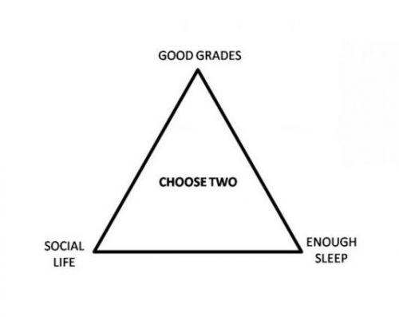

1) My topic is the idea of the college triangle listed below that shows "social life" "good grades", and "enough sleep". This triangle says to "choose two" which helps illustrate the idea that everything you choose to do in your life always has a trade-off, even if it's not completely obvious. My topic will be about these trade-offs and the idea of how your priorities can shape your future. I really want to illustrate the idea of how your smallest decisions now can compound and affect what your future looks like.

2) This topic most relies on the lense of speculative design due to its heavy emphasis on speculating about one's future. It could also touch on data visualization (how do your choices showcase how much you care about certain priorities or how your priorities compare to others') or utopian/dystopian narratives (maybe including a way to "rewind" time to change the outcome, thus making it utopian or dystopian).
3) cool video!
4) Some features that i would imagine my project to include is first a "quiz" section where it gives you situations and asks how you would respond to each situation. Then, at the end theres a way to visualize your choices and how each choice prioritized different aspects of your life. And then a projection to what your future would look like depending on your percentages. I was also thinking of maybe including a rewind feature to allow you to tweak your end goal or see what changes you could make to create a more desirable future. I'm not too sure about what libraries to use, but maybe something to help visualize data easily.
5) I'm not too sure about how to project the future in my project depending on the data. I'm also unsure about how to map out a fair quiz that will equally measure all variables. Additionally, I'm not sure what I want my variables to be (I want to expand to more than just good grades, good sleep, and good social life. I think measuring maybe 5 qualities would be interesting).
6) My target audience will be low-income college seniors in California. I want to focus on college seniors due to them being on the brink of graduating which puts them in a unique position of thinking a lot about their future. I also want to focus on lower-income students because these students also tend to worry more about their future, stability, and even their impact on future generations. Lastly, I want to focus on people who live in California so I can directly impact the people in my community.